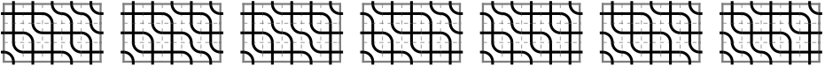

MREG Project: Rational Catalan Combinatorics
Students: Yutong Li, Amanda Schwartz, Henry Talbott, Katie Waddle
Faculty advisors: Thomas Lam
and
Harry Richman

Project description
Meeting notes
References
-
Catalan number Wikipedia
-
Partitions which are simultaneously t_1- and t_2-core
J. Anderson
-
Results and conjectures on simultaneous core partitions
D. Armstrong, C. R. H. Hanusa, B. C. Jones
-
Sweep maps: a continuous family of sorting algorithms
D. Armstrong, N. A. Loehr, G. S. Warrington
-
Rational associahedra and noncrossing partitions
D. Armstrong, B. Rhoades, N. Williams
-
Positroids, knots, and q,t-Catalan numbers
P. Galashin and T. Lam
-
Compactified Jacobians and q,t-Catalan numbers, I
E. Gorsky and M. Mazin
-
The q,t-Catalan numbers and the space of diagonal harmonics
J. Haglund
-
Sweeping up zeta
H. Thomas, N. Williams
-
Table of q,t-Catalan numbers
M. Zabrocki